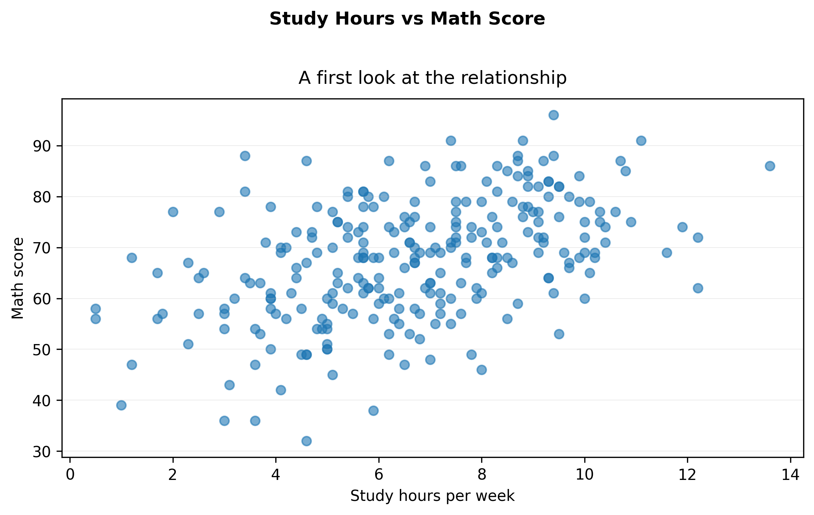
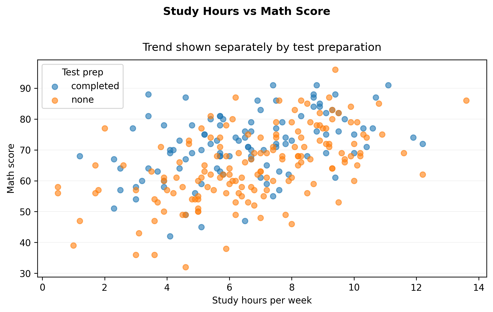

Good visualization does not start with a library. It starts with a question.
Before writing code, define:
What decision or comparison are we making?
What variables are involved?
What would count as a meaningful difference?
In this lesson, we begin with a simple analytical question and build the plot around it.
Step 1 — Load the data
import pandas as pdfrom cdi_viz.theme import cdi_notebook_init# Chapter init: resets the shared figure counter and ensures figures/ existscdi_notebook_init(chapter="02")df = pd.read_csv("data/cdi-student-outcomes.csv")print("First rows:")print(df.head())
First rows:
group test_prep study_hours math_score reading_score writing_score
0 Group B completed 3.9 58 64 51
1 Group A none 7.7 67 85 61
2 Group A none 9.3 83 65 73
3 Group A none 3.9 60 67 48
4 Group A none 8.3 68 63 47
Step 2 — Define the question
Suppose we ask:
Does study time relate to math performance?
This is a relationship question between:
study_hours
math_score
That suggests a scatter plot.
Step 3 — A minimal first plot (exported)
import matplotlib.pyplot as pltfrom cdi_viz.theme import show_and_save_mplfig, ax = plt.subplots(figsize=(7.6, 4.6))ax.scatter(df["study_hours"], df["math_score"], alpha=0.6)ax.set_xlabel("Study hours per week")ax.set_ylabel("Math score")# Title + subtitle without overlapfig.suptitle("Study Hours vs Math Score", fontweight="bold", y=1.02)ax.set_title("A first look at the relationship", pad=10)# Simple, readable grid (y only)ax.grid(True, axis="y", linewidth=0.4, alpha=0.3)ax.grid(False, axis="x")fig.tight_layout()show_and_save_mpl(fig) # figures/02_001.png
Saved PNG → figures/02_001.png

This answers the structural question:
Is there an upward trend?
Is the relationship linear?
Are there obvious outliers?
Step 4 — Make the comparison explicit (exported)
Now extend the question:
Does test preparation change the relationship?
This introduces grouping.
import matplotlib.pyplot as pltfrom cdi_viz.theme import show_and_save_mplfig, ax = plt.subplots(figsize=(7.6, 4.6))for grp, sub in df.groupby("test_prep"): ax.scatter(sub["study_hours"], sub["math_score"], alpha=0.6, label=str(grp))ax.set_xlabel("Study hours per week")ax.set_ylabel("Math score")fig.suptitle("Study Hours vs Math Score", fontweight="bold", y=1.02)ax.set_title("Trend shown separately by test preparation", pad=10)ax.legend(title="Test prep")ax.grid(True, axis="y", linewidth=0.4, alpha=0.3)ax.grid(False, axis="x")fig.tight_layout()show_and_save_mpl(fig) # figures/02_002.png
Saved PNG → figures/02_002.png

Now the visual supports comparison:
Is one group consistently higher?
Is the relationship mostly the same shape?
Step 5 — Interpret before optimizing
Interpret what you see before adjusting style.
There is a positive association between study hours and math score.
Students who completed test preparation tend to score higher.
The relationship appears approximately linear.
Key Takeaways
Start with a question, not a plotting function.
Match plot type to data structure.
Add grouping only when it strengthens the comparison.
Interpretation comes before aesthetic optimization.